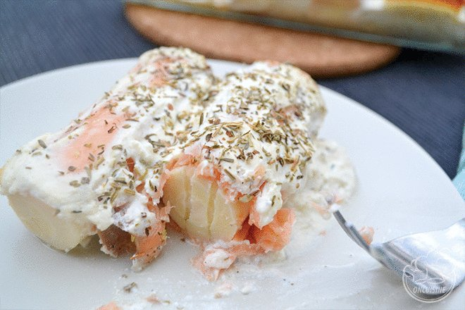

Roulés de saumon aux coeurs de palmier
Ingredients
2×
- 1 c. à s. de Boursin
- 60 ml de crème
- 12 ml de lait
- poivre
- 1 boîte de coeurs de palmier
- 4 tranches de saumon fumé

Préparation
Étape 1
Fouetter 1 c. à s. de Boursin avec 60 ml de crème, 12 ml de lait et du poivre.
Étape 2
Enrouler 1 boîte de coeurs de palmier dans 4 tranches de saumon fumé.
Étape 3
Disposer les roulés dans un plat, verser la préparation et cuire 20min à 150ºC.